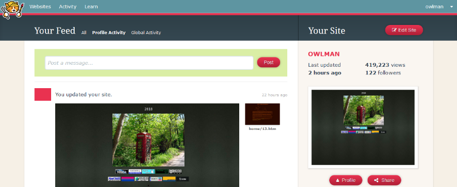

Dark theme for Neocities (also known as "neodark.css") is a dark theme made for all pages on neocities.org (but not any of the subdomains, eg gwtagacw.neocities.org would not be affected by this). The dark theme was made by Neocities user hosma in December 2017.
To run the theme you will need a browser add-on such as Styles (free of charge, will work with most browsers).
The code was released into the Public Domain by hosma around the same time as it was published online, this means that you may do whatever you like with the code; you are free to copy, modify, publish, use, sell or distribute this software, either in source code form or as a compiled binary, for any purpose, commercial or non-commercial, and by any means you like.
As hosma has a sense of humour, he put in a number of Easter eggs in the code, here are some of the more noteworthy ones;
For line 206 to 208/*** **** Other shit like tutorials and upgrade to supporter and stuff ***/For line 212 to 213
/* Backgrounds and stuff on pages I guess Stuff like /tutorials/ for example */For line 231 to 240
/**** Everything below is optional ****/ /**** In other words, don't bother ****/ /* Shit I don't care about and nobobdy probably ever will so come on now, just remove this entire section, nobody wants a custom theme for the tutorials, the images take up most of the screen and they're white anyway. */
You can find the official code for the theme on hosma's GitHub page, you can also find a local copy of the code by clicking here.
